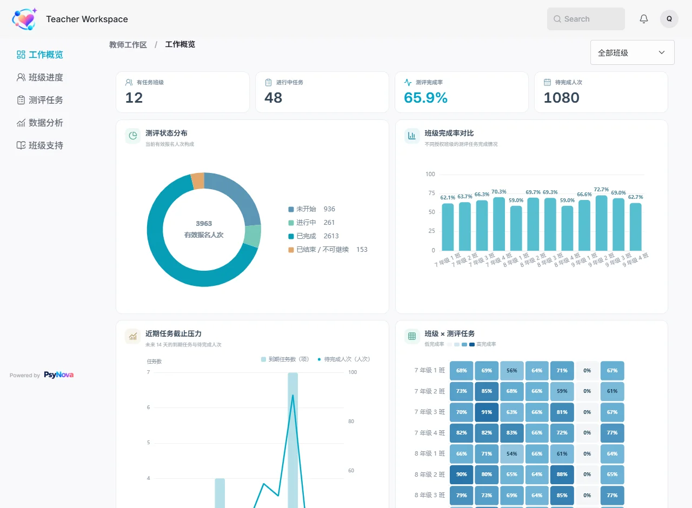
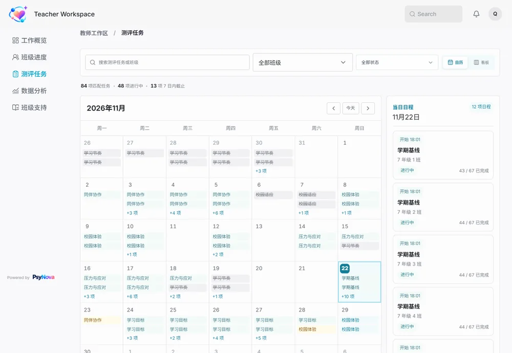
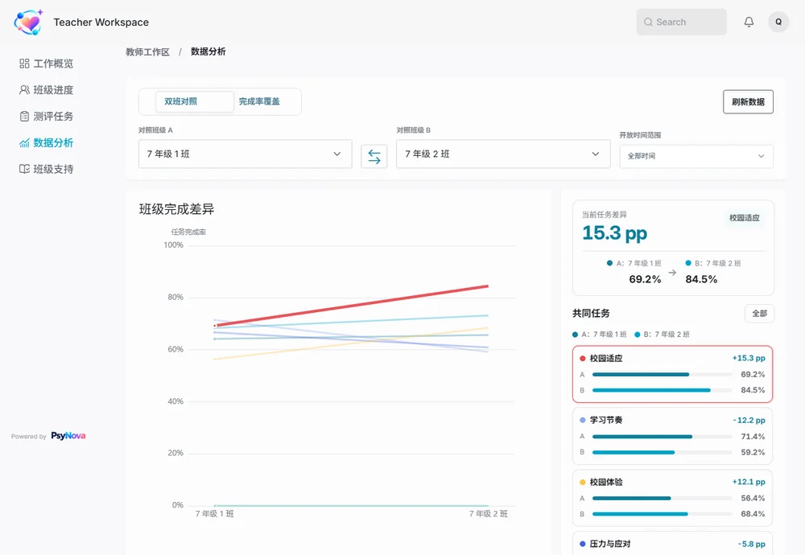

学校管理员
导入名单、安排班级和初始账号，发布测评并跟进学校运营

导入名单、安排班级和初始账号，发布测评并跟进学校运营
管理专业资料、CAT 题库与方案，处理专业复核和学生支持请求
查看授权班级的任务汇总、日历和完成率，提交学生支持转介
开始或继续个人测评，查看获准发布的反馈，使用有资料来源的教育支持


注册体验账号后，系统为你准备一所独立的合成学校。可切换四个角色，查看样例班级、测评任务和进度
打开线上体验以 2.0 为基线。可在 Windows 上从空业务库开始体验，首次建立学校和管理员
查看 Windows 安装预览体验环境仅使用合成数据。测评完成、教育支持与专业复核在各自的权限范围内运行